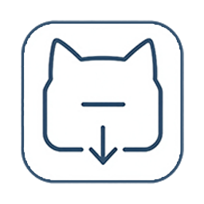

VDCat
⚙
使用前提
链接解析
：依赖后端服务，请先在
设置
中配置服务地址与 API Key。
主页 / 批量本地下载
：基于当前页面解析，需先在浏览器中 登录对应平台
（此功能当前仅支持快手）
，否则无法正常抓取。
尚未配置服务地址或 API Key。
打开设置
视频链接 / 分享文本
粘贴
当前页
清空
自动识别
抖音
快手
同时下载封面
下载方式
后端队列
本地下载
视频卡片注入下载按钮
解析
解析并下载
下载本页面全部视频
当前为作者主页，已切换为整页下载模式：点击按钮后将自动逐条播放并下载，请勿关闭该标签页。
平台
—
加入下载队列
复制直链
下载任务
刷新
暂无活动任务